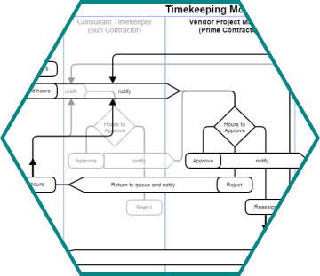
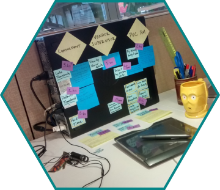

SF PUC - Hours Tracking
The San Francisco Public Utilities Commission hired me on a part-time contract to design a new timekeeping module for tracking work hours logged against contracts. The current system was generally regarded as confusing, and didn't plug into the new contract tracking site.
The biggest constraints were the variety of reports that were needed, both ones that the current system generated and creating a new way to build ones that were current put together by individuals.

In a short part-time contract, I was able to pull together a very extensive clickable prototype to meet the PUC requirements. I was also able to conduct some user testing, which resulted in many positive comments.
Stakeholder conversations revealed more data types that were needed for various reports. These happened during presentations, and I was able to make changes to the prototype on the spot. Where I couldn't, queries were raised with the development team about technical possibilities.

As the sole designer, I was responsible for research, design, testing, presentation, and all other aspects of getting a clickable prototype ready for development work.
After understanding the boundaries of the project, I dove into market research and design standards to understand best practices for this type of interaction. I also conducted some limited user testing among co-workers, and eventually with stakeholders.
Along with the new site had come new branding, and I was able to contribute to the design document that was still a living document.
balsamiq, post-its, alternativeto.net, Axure, Inkscape, pencil & paper.
Because the design document was still in progress, my first task was to read it and clarify the bounds of the project. I ran through several thumbnail-sketch flows with my supervisor to ensure that we were on the same page.
Although the whole process was very seperate from the development ("waterfall" style), I made an effort to engage my supervisor in an Agile style - checking in almost every morning, walking through what I'd done that week, and working out a fairly accurate method of costing each step.
Towards the end of the project, I uncovered more requirements from other stakeholders who were not involved until some of the final design presentations. This was quite a surprise, and my ability to make notes and changes on the live prototype came in handy.